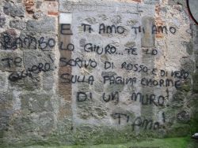

Tkinter
Message Widget
The widget can be used to display short text messages. The message widget is similar in its functionality to the Label widget, but it is more flexible in displaying text, e.g. the font can be changed while the Label widget can only display text in a single font. It provides a multiline object, that is the text may span more than one line. The text is automatically broken into lines and justified. We were ambiguous, when we said, that the font of the message widget can be changed. This means, that we can choose arbitrarily a font for one widget, but the text of this widget will be rendered solely in this font. This means that we can't change the font within a widget. So it's not possible to have a text in more than one font. If you need to display text in multiple fonts, we suggest to use a Text widget.
The syntax of a message widget:
w = Message ( master, option, ... )
Let's have a look at a simple example. The following script creates a message with a famous saying by Mahatma Gandhi:
from Tkinter import *
master = Tk()
whatever_you_do = "Whatever you do will be insignificant, but it is very important that you do
it.\n(Mahatma Gandhi)"
msg = Message(master, text = whatever_you_do)
msg.config(bg='lightgreen', font=('times', 24, 'italic'))
msg.pack( )
mainloop( )
The widget created by the script above looks like this:

If you want to run this script under Python3, the only thing you have to change is the import line. Instead of
from Tkinter import *you have to write
from tkinter import *
The Options in Detail
| Option | Meaning |
|---|---|
| anchor | The position, where the text should be placed in the message widget: N, NE, E, SE, S, SW, W, NW, or CENTER. The Default is CENTER. |
| aspect | Aspect ratio, given as the width/height relation in percent. The default is 150, which means that the message will be 50% wider than it is high. Note that if the width is explicitly set, this option is ignored. |
| background | The background color of the message widget. The default value is system specific. |
| bg | Short for background. |
| borderwidth | Border width. Default value is 2. |
| bd | Short for borderwidth. |
| cursor | Defines the kind of cursor to show when the mouse is moved over the message widget. By default the standard cursor is used. |
| font | Message font. The default value is system specific. |
| foreground | Text color. The default value is system specific. |
| fg | Same as foreground. |
| highlightbackground | Together with highlightcolor and highlightthickness, this option controls how to draw the highlight region. |
| highlightcolor | See highlightbackground. |
| highlightthickness | See highlightbackground. |
| justify | Defines how to align multiple lines of text. Use LEFT, RIGHT, or CENTER. Note that to position the text inside the widget, use the anchor option. Default is LEFT. |
| padx | Horizontal padding. Default is -1 (no padding). |
| pady | Vertical padding. Default is -1 (no padding). |
| relief | Border decoration. The default is FLAT. Other possible values are SUNKEN, RAISED, GROOVE, and RIDGE. |
| takefocus | If true, the widget accepts input focus. The default is false. |
| text | Message text. The widget inserts line breaks if necessary to get the requested aspect ratio. (text/Text) |
| textvariable | Associates a Tkinter variable with the message, which is usually a StringVar. If the variable is changed, the message text is updated. |
| width | Widget width given in character units. A suitable width based on the aspect setting is automatically chosen, if this option is not given. |